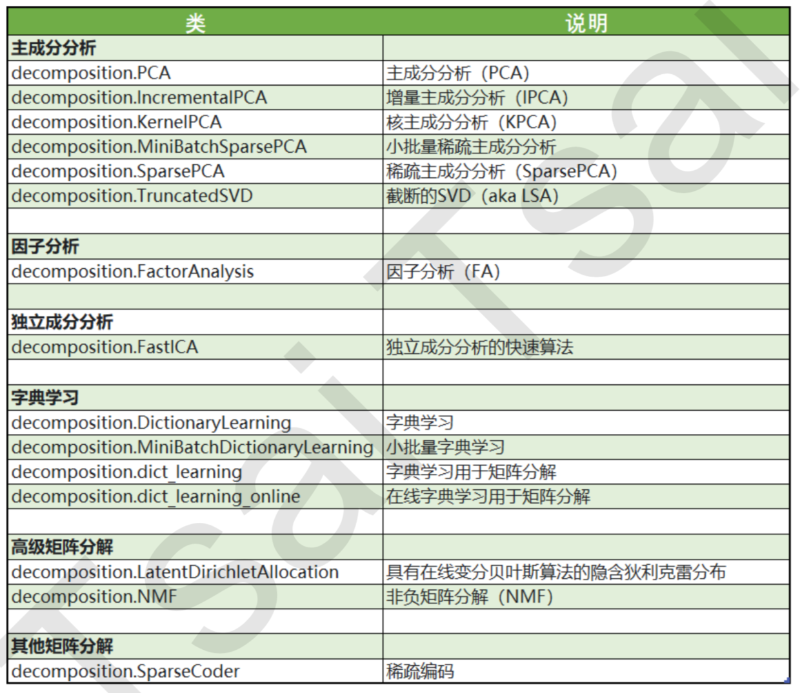
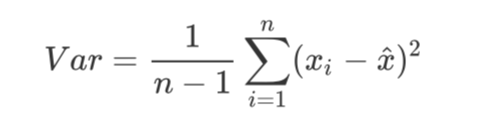

- 降维算法中的”降维“，指的是降低特征矩阵中特征的数量。
in sklearn
PCA使用的信息量衡量指标，就是样本方差，又称可解释性方差，方差越大，特征所带的信息量越多。

Var代表一个特征的方差，n代表样本量，xi代表一个特征中的每个样本取值，xhat代表这一列样本的均值。矩阵分解：让数据能够被压缩到少数特征上并且总信息量不损失太多的技术。PCA和SVD是两种不同的降维算法，只是两种算法中矩阵分解的方法不同，信息量的衡量指标不同罢了。降维完成之后，PCA找到的每个新特征向量就叫做“主成分”，而被丢弃的特征 向量被认为信息量很少，这些信息很可能就是噪音。
- PCA使用方差作为信息量的衡量指标，并且特征值分解来找出空间V。
- SVD使用奇异值分解来找出空间V
降维与特征工程的区别：
- 特征选择是从已存在的特征中选取携带信息最多的，选完之后的特征依然具有可解释性，我们依然知道这个特征在原数据的哪个位置，代表着原数据上的什么含义。
- 降维算法，是将已存在的特征进行压缩，降维完毕后的特征不是原本的特征矩阵中的任何一个特征，而是通过某些方式组合起来的新特征。通常来说，在新的特征矩阵生成之前，我们无法知晓降维算法们都建立了怎样 的新特征向量，新特征矩阵生成之后也不具有可读性，我们无法判断新特征矩阵的特征是从原数据中的什么特征组合而来，新特征虽然带有原始数据的信息，却已经不是原数据上代表着的含义了。降维算法因此是特征创造(feature creation，或feature construction)的一种。
- 可以想见，PCA一般不适用于探索特征和标签之间的关系的模型(如线性回归)，因为无法解释的新特征和标签之间的关系不具有意义。在线性回归模型中，我们使用特征选择。
sklearn.decomposition.PCA (n_components=None, copy=True, whiten=False, svd_solver=’auto’, tol=0.0， iterated_power=’auto’, random_state=None)
1
2
3
4
5
6
7
8
9
10
11from sklearn.decomposition import PCA
#调用PCA
pca = PCA(n_components=2) pca = pca.fit(X)
X_dr = pca.transform(X)
# 属性explained_variance，查看降维后每个新特征向量上所带的信息量大小(可解释性方差的大小)
pca.explained_variance_
# 属性explained_variance_ratio，查看降维后每个新特征向量所占的信息量占原始数据总信息量的百分比
# 又叫做可解释方差贡献率
pca.explained_variance_ratio_
# 降维后的总方差为原来方差的百分比
pca.explained_variance_ratio_.sum()参数：
- n_components: n_components是我们降维后需要的维度，即降维后需要保留的特征数量，降维流程中第二步里需要确认的k值，一般输入[0, min(X.shape)]范围中的整数。
- svd_solver: 奇异值分解器。sklearn将降 维流程拆成了两部分:一部分是计算特征空间V，由奇异值分解完成，另一部分是映射数据和求解新特征矩阵，由主成分分析完成，实现了用SVD的性质减少计算量，却让信息量的评估指标是方差，具体流程如下图:
- random_state
接口： - inverse_transform
选择最好的n_components:
方法一：累积可解释方差贡献率曲线，选择拐点作为最优参数值
1
2
3
4
5
6import numpy as np
pca_line = PCA().fit(X) plt.plot([1,2,3,4],np.cumsum(pca_line.explained_variance_ratio_))
plt.xticks([1,2,3,4]) #这是为了限制坐标轴显示为整数
plt.xlabel("number of components after dimension reduction")
plt.ylabel("cumulative explained variance")
plt.show()方法二：最大似然估计自选超参数法
1
pca_mle = PCA(n_components="mle")
方法三：按信息量占比选超参数
输入[0,1]之间的浮点数，并且让参数svd_solver ==’full’，表示希望降维后的总解释性方差占比大于n_components 指定的百分比，即是说，希望保留百分之多少的信息量。比如说，如果我们希望保留97%的信息量，就可以输入 n_components = 0.97，PCA会自动选出能够让保留的信息量超过97%的特征数量。1
pca_f = PCA(n_components=0.97,svd_solver="full")